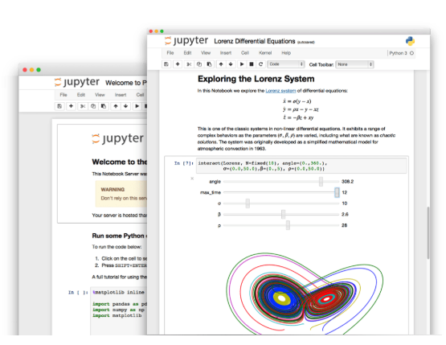
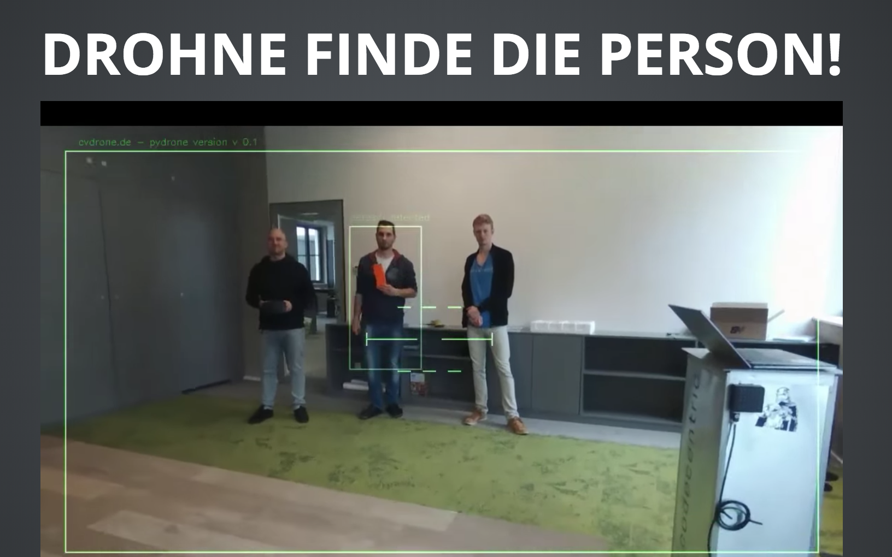
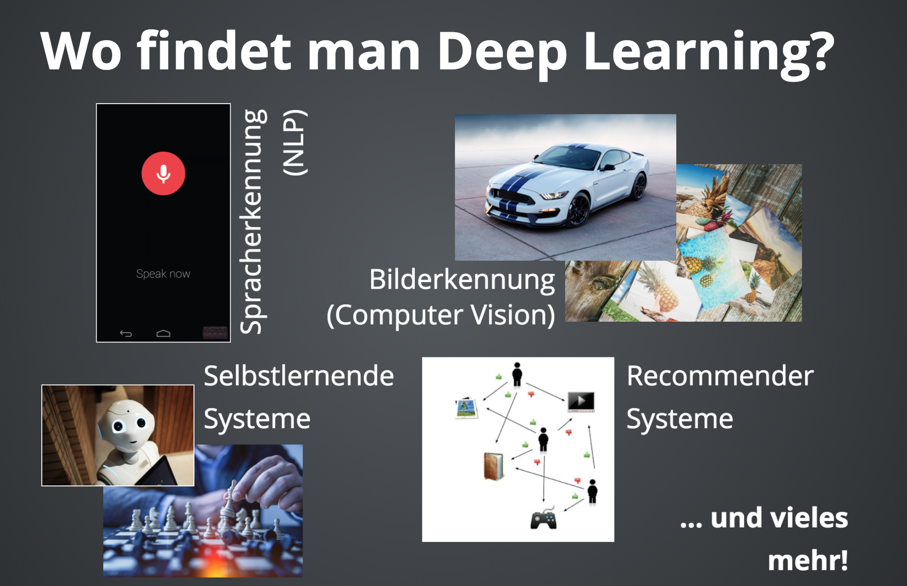
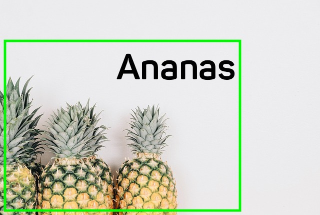

Das codecentric.AI Deep Learning Bootcamp ist für Entwickler auch ohne Mathe Studium und ohne Data Science Background. Als Einsteiger oder Fortgeschrittener findest du bei uns einen komprimierten Schnelldurchlauf durch die wichtigsten Themen im Bereich der künstlichen Intelligenz. Unser Kurs ist Hands-On - wir zeigen dir viele praktische Beispiele und Anwendungsmöglichkeiten. Noch vor ein paar Jahren stand diese Technologie nur einer Elite zur Verfügung - heute kann man sie einfach anwenden!
Im Kurs verwenden wir Python, Keras, TensorFlow und PYTORCH und geben einen Überblick über die aktuell relevanten Frameworks:
Lernziele
|
Der Kurs in Zahlen
4,7 / 285 Bewertungen |
| Einführung |
|
| Entwicklungs Umgebung  |
|
| Machine Learning Basics |
|
| Computer Vision Basics  |
Am Beispiel einer Computer Vision Drohne erklären wir wie man einfache CV Algorithmen kombiniert um Personen zu finden:
|
| Neuronale Netze und Deep Learning  |
|
| Überblick über Frameworks |
|
| Neuronale Netze selbst gemacht (evtl. in vorigen Abschnitt mergen ... learning by doing) |
|
| Computer Vision Praxis 1: AI Tutti Frutti  |
Was bist du denn für ein Früchtchen? Anhand eines Früchte-Datasets bauen wir einen Classifier,
der Bananen, Äpfel, Birnen und vieles mehr voneinander unterscheiden kann.
|
| Transfer Learning |
|
| Natural Language Processing Basics |
|
| NLP Praxis 1: Emails automatisch verstehen und beantworten |
|
| Reinforcement Learning Basics |
|
| Reinforcement Learning Praxis 1: |
|
Wie läuft der Kurs ab? Der Kurs ist aufgeteilt in mehrere Abschitte. Es gibt zunächst eine Einführung mit Basics und Videos. Dann gibt es Übungsaufgaben. Ausserdem gibt es Praxis teile ... todododododo
Was kostet der Kurs? Der Kurs wird 900 EUR pro Teilnehmer kosten. Wer sich in der Einführungsphase einschreibt, für den ist der Kurs kostenlos.
Wieviel Zeit muss ich für den Kurs investieren? Wenn du ca. 4 Stunden pro Woche investierst, brauchst du ca. 2 Monate um den Kurs abzuschliessen.